السلسلة 94
السيارة (صنف B) · 25 سؤال بالصوت. حاول تجاوب بوحدك، من بعد شوف الجواب.
السؤال 1
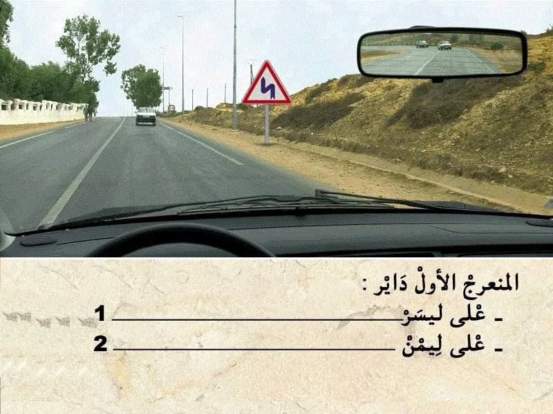
بيّن الجواب
الجواب الصحيح: 1
هذا العلامة . هي علامة ديال الخطر .
- كتعلم على منعرجات متتالية. المنعرج الاول داير على ليسر . و الثاني داير على ليمن.
و بالتالي الجواب الصحيح هو رقم 1.
السؤال 2
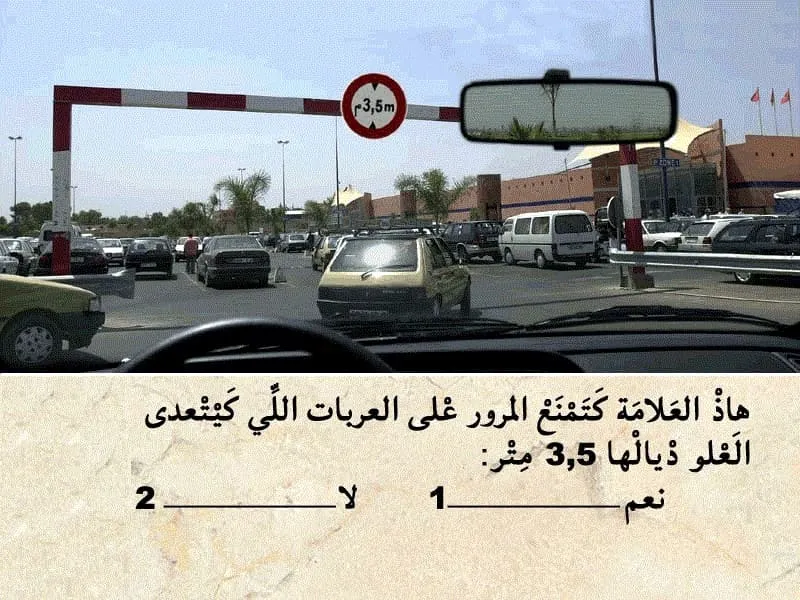
بيّن الجواب
الجواب الصحيح: 1
هذا العلامة ديال المنع.
كتمنع المرور على العربات لي كيتجاوز العلو ديالها 3,5 متر.
السؤال 3
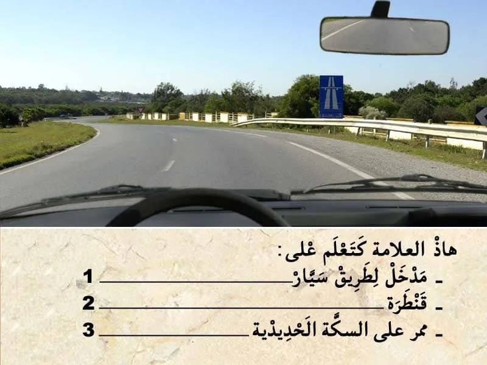
بيّن الجواب
الجواب الصحيح: 1
هذا العلامة ديال الإرشاد.
كتعلم على مدخل لطريق سيار.
يعني ابتدأ من العلامة غادي ندخل لطريق سيار.
السؤال 4
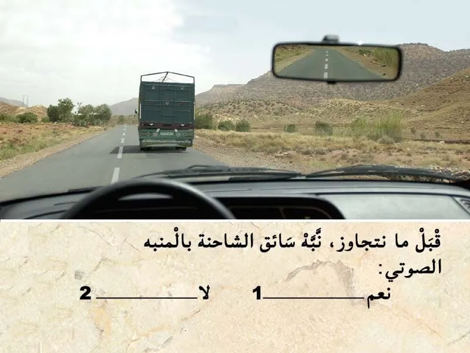
بيّن الجواب
الجواب الصحيح: 2
قبل التجاوز . واجب عليا نراقب، تم نبه، تم ننحاز.
✏️في هذا الحالة الرؤية قبالتي غير واضحة و بالتالي ما يمكنش لي نتجاوز.
✏️و بالتالي ما يمكنش ليا مستعمل مؤشر تغيير الإتجاه او المنبه الصوتي باش نعلم بلي غادي نتجاوز .
السؤال 5
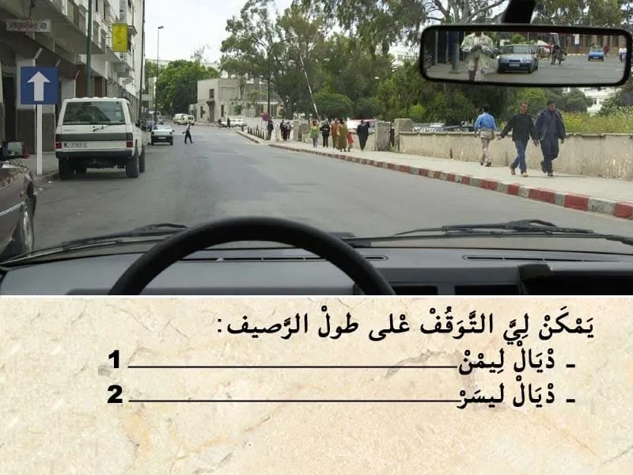
بيّن الجواب
الجواب الصحيح: 2
على طول الرصيف ديال ليمن . الرصيف احمر و أبيض يعني ممنوع التوقف .
اما على ليسر عندي علامة ديال الإرشاد كتعلم بلي الطريق عندها اتجاه وحيد.
و بما ان ما عندي حتى علامة كتمنع التوقف على ليسر.
يعني يمكن لي نوقف او نتوقف على ليسر.
السؤال 6
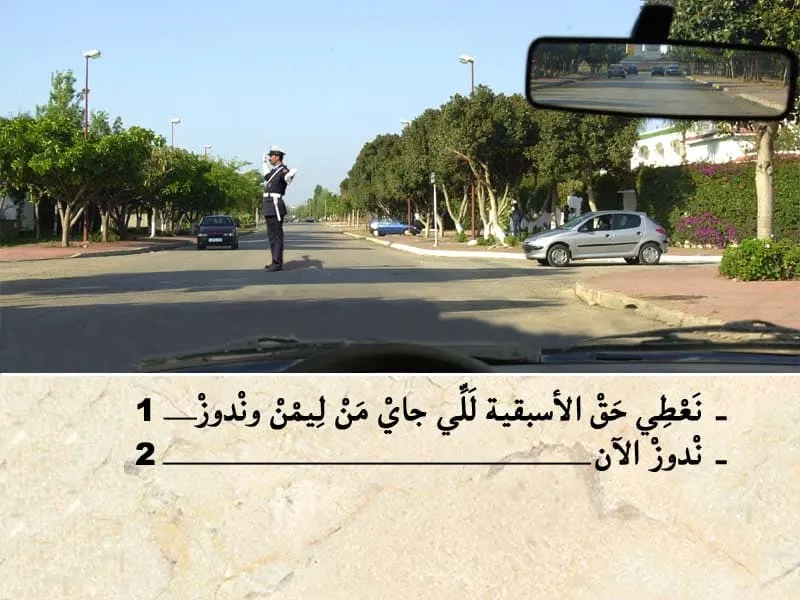
بيّن الجواب
الجواب الصحيح: 2
في ملتقى الطرق مع وجود الشرطي او الدركي .
من الواجب نتبع إشارة شرطي المرور .
في الحالة الشرطي داير لجهتي بجنبو و بالتالي عاطيني إشارة بيدو باش ندوز . و بالتالي ندوز الآن.
السؤال 7
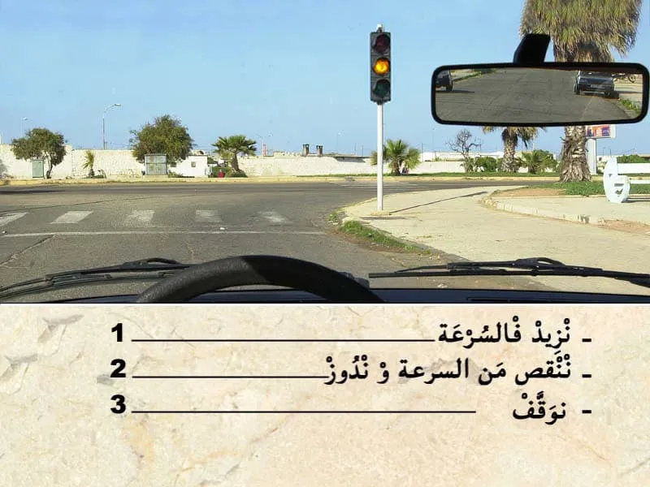
بيّن الجواب
الجواب الصحيح: 3
الضوء الأصفر كيعلم على انه مباشرة غادي يشعل الضوء الاحمر و بالتالي نوقف.
السؤال 8
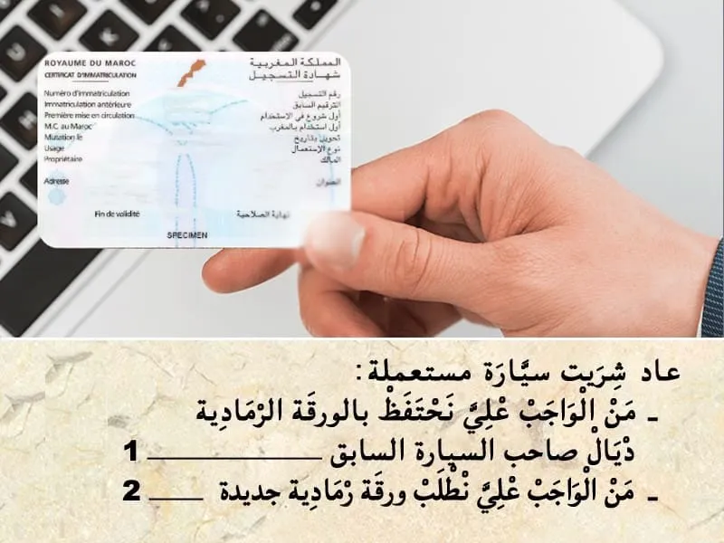
بيّن الجواب
الجواب الصحيح: 2
عند شراء سيارة مستعملة من الواجب طلب بطاقة رمادية جديدة لسيارتي في الاسم ديالي .
السؤال 9
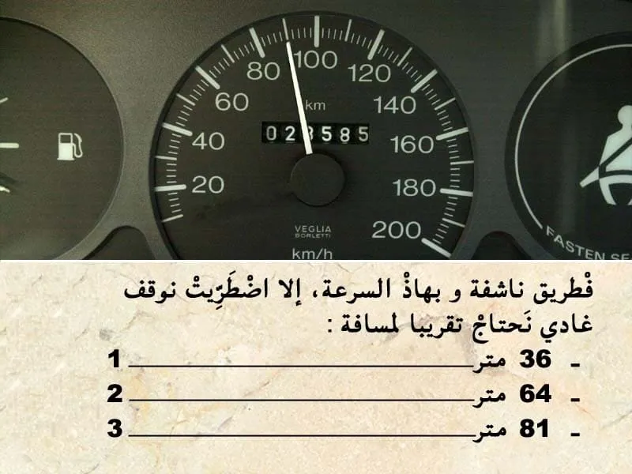
بيّن الجواب
الجواب الصحيح: 3
مسافة التوقف كيتم حسابها بالعلاقة التالية :
- العشر ديال الصعة مضروب في نفسه . يعني في هذه الحالة :
- السرعة 90 كلم في الساعة .
و بالتالي مسافة التوقف : 9*9=81 متر.
--- يعني الجواب رقم 3.
السؤال 10

بيّن الجواب
الجواب الصحيح: 2
بسرعة 80 كلم فالساعة.
من خلال الوضعية يتضح أن مسافة الأمان غير كافية.
السؤال 11

بيّن الجواب
الجواب الصحيح: 1
بمجرد ما السائق يبدى يحس بالنعاس.
كيتوجب عليه يوقف باش يرتاح . حيت ممكن في اي لحظة يباغته النعاس .
و من بين الأسباب لي مكن تكون سبب في حوادث السير هي التعب .
السؤال 12
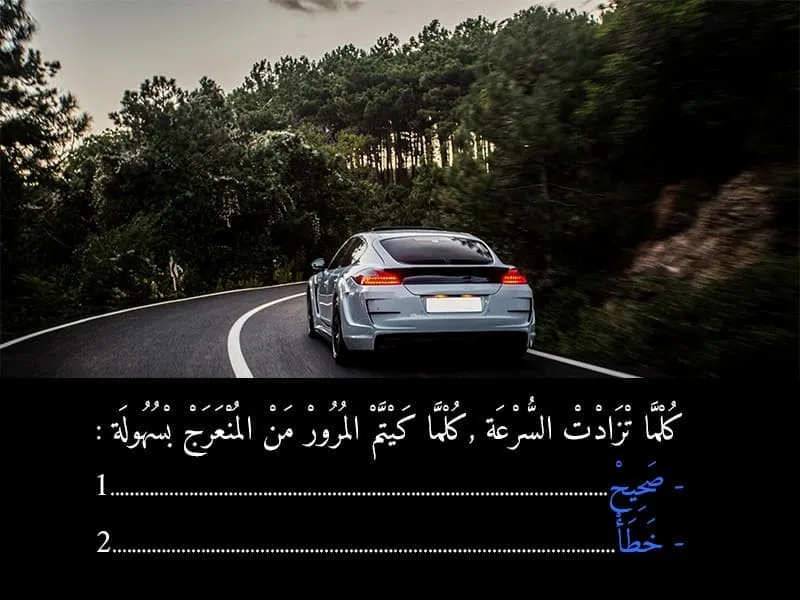
بيّن الجواب
الجواب الصحيح: 2
على العكس كلما تزادت السرعة كيصعاب المرور في المعرج .
السؤال 13
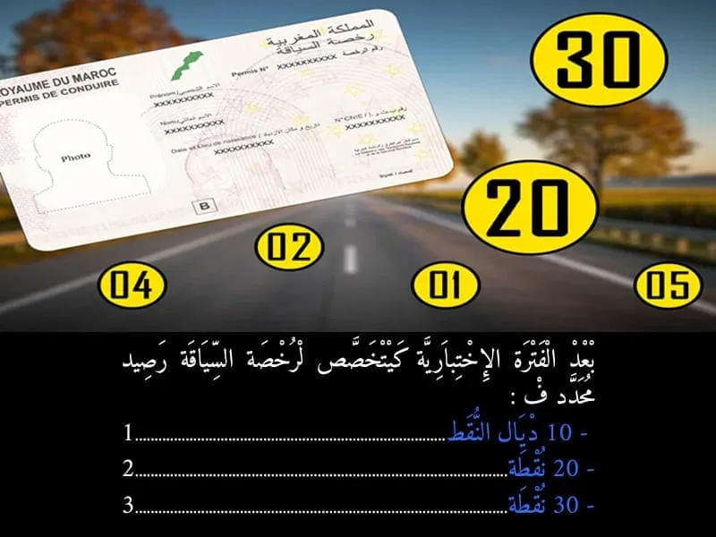
بيّن الجواب
الجواب الصحيح: 3
تتوفر رخصة السياقة على رصيد عشرين ( 20) خلال الفترة الاختبارية و المحددة في سنتين (2) تبتدئ من تاريخ تسليمها و ثلاثين نقطة (30) عندما تصبح هذه الرخصة نهائية.
السؤال 14
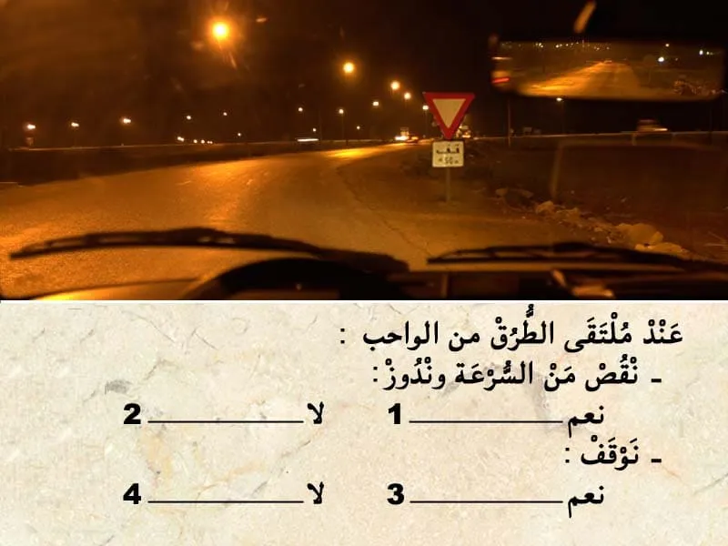
بيّن الجواب
الجواب الصحيح: 2 و 3
هذا العلامة ديال اعطاء حق الأسبقية. كتعلم بلي واجب عليا نعطي حق الأسبقية في ملتقى الطرق المقبل .
-و تحت منها علامة تكميلية فيها 150 متر.
و بالتالي واجب عليا نعطي حق الأسبقية للي جاي من جهت ليمن و يلي جاي من جهت ليسر و حتى للي جاي في الإتجاه المعاكس في حالة كنت غادي ندور على اسير.
- فهذا الحالة عندي قف و بالتالي واجب عليا نوقف
السؤال 15
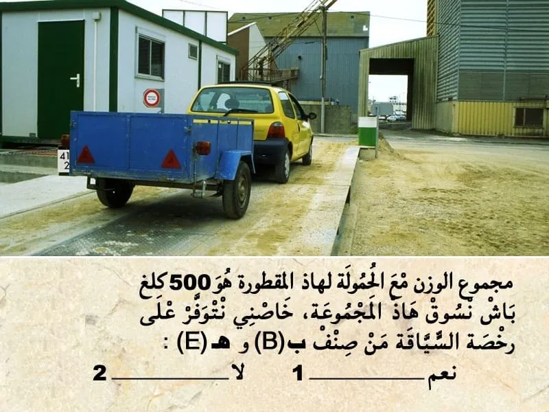
بيّن الجواب
الجواب الصحيح: 2
رخصة السياقة من صنف ب كتمكني نسوق نجر مقطورة ما يفوتش مجموع الوزن ديالها مع الحمولة ل 750 كلغ او ان يتجاوز 750 كلغ ،شريطة الا يتجاوز الوزن الإجمالي مع الحمولة ديال المركبة الجارة و المقطورة معا 3500 كلغ ، او الا يتجاوز الوزن الإجمالي للمقطورة محملة وزن المركبة الجارة فارغة.
السؤال 16
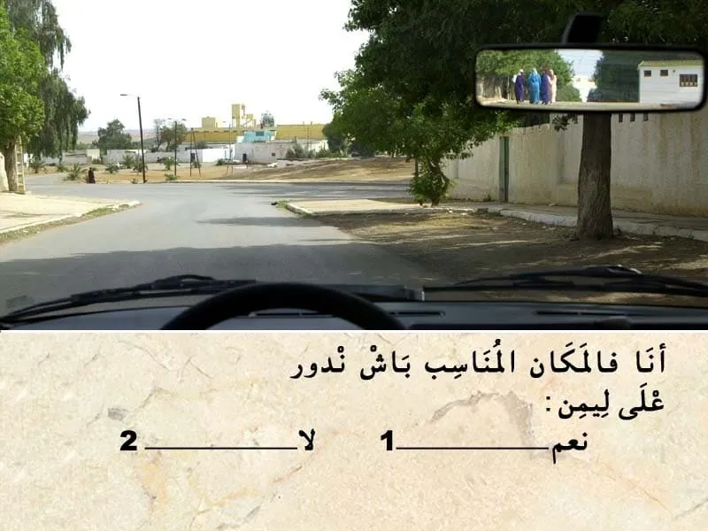
بيّن الجواب
الجواب الصحيح: 1
في هذا الحالة أنا شاد ليمن ديال المسلك و بالتالي أنا في المكان المناسب باش ندور على ليمن .
السؤال 17
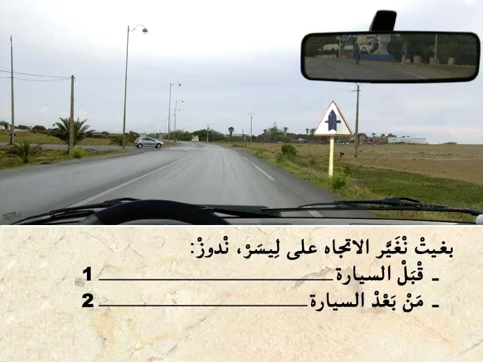
بيّن الجواب
الجواب الصحيح: 1
هذا العلامة . هي علامة ديال الخطر .
- كتعلم على ملتقى طرق على بعد 150 متر . هذا العلامة كتعلمني بلي عندي جق الاسبقة في هذا ملتقى الطرق.
-- منين تكون عندي هذا العلامة ما كنعطي حق الاسبقية لا للي جاي من ليمن . و لا للي جاي من ليسر .
---- فقط للي جاي في الاتجاه المعاكس في حالة بغيت نغير الإتجاه على ليسر
بالتالي الجواب الصحيح هو رقم 1.
السؤال 18

بيّن الجواب
الجواب الصحيح: 2
مسافة الامان هي العشر ديال السرعة مضروب في نفسه .
يعني 7*6=42 متر .
في هذا الحالة باش نعرف المسافة الفاصلة غادي نعتمد على الخطوط .
كل خط لي في جنب الطريق طول ديالو 20 متر و بين كل خط و خط 6 متر .
إلا لاحظت في هذا الوضعية عندي خط ما كاملش . و بالتالي اقل من 20 متر .
و بالتالي المسافة غير كافية.
السؤال 19
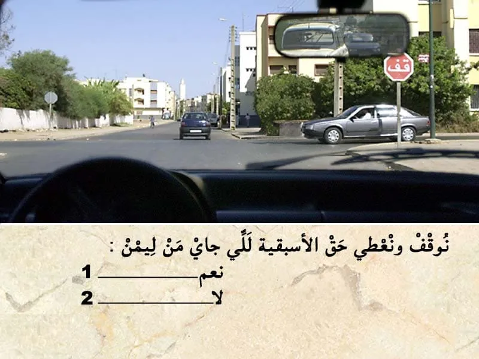
بيّن الجواب
الجواب الصحيح: 1
في ملتقى الطرق عندي علامة قف و بالتالي واجب عليا نوقف و نعطي حق الأسبقية.للي جاي من ليمن و للي حاي من ليسر.
و بالتالي واجب عليا نعطي حق الأسبقية
السؤال 20
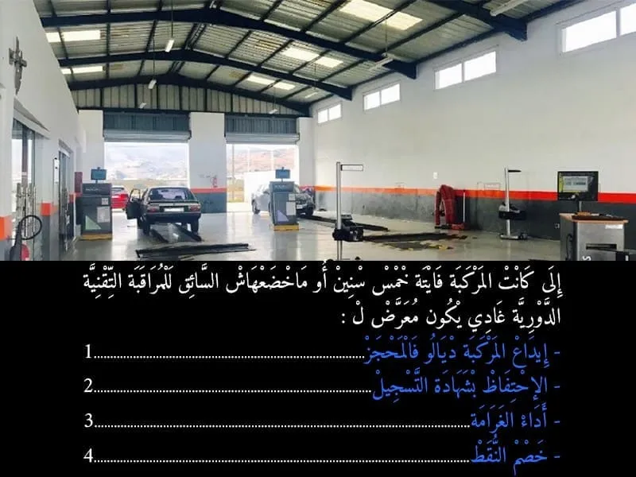
بيّن الجواب
الجواب الصحيح: 2 و 3 و 4
في حالة عدم التوفر على شهادة الفحص التقني بالنسبة للمركبات لي تجاوز العمر ديالها 5 سنين .
كتعتبر مخالفة الدرجة الأولى . فيها غرامة مالية ديال 700 درهم.
- و لا يتم إيداع المركبة في المحجز.و انما يتم الاحتفاظ بيها الى ان يقوم السائق بالادلاء بشهادة تثبث القيام بالفحص التقني.
- و يتم الاحتفاظ بشهادة التسجيل .
- كما يتم خصم 3 ديال النقط.
السؤال 21

بيّن الجواب
الجواب الصحيح: 1
المسلك لي أقصى اليمين هو مسلك خاص : في غالب الاحيان كيكون مسلك للعربات المجرورة بواسطة حيوانات او مسلك للدراجات .
اما المسلك ديال السير العادي هو لي انا غادي فيه الان.
و بالتالي انا في المكان المناسب للسير .
السؤال 22
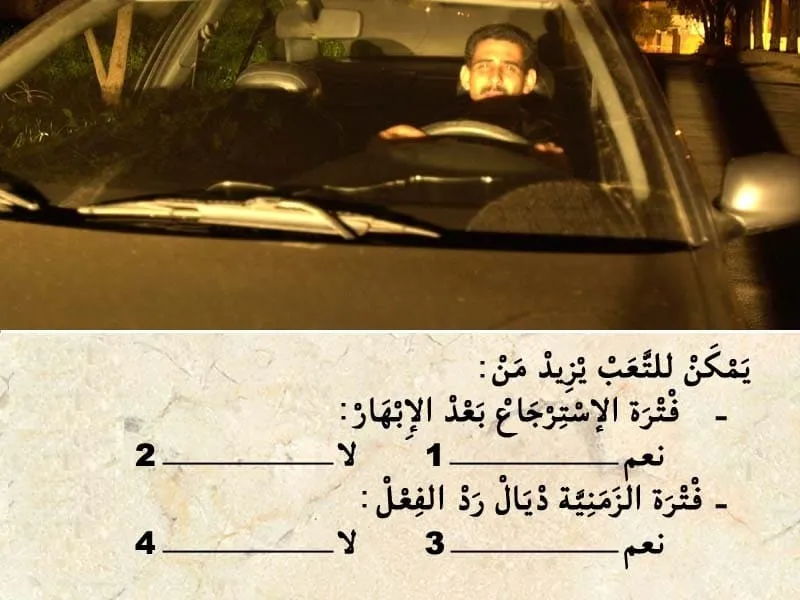
بيّن الجواب
الجواب الصحيح: 1 و 3
يمكن للتعب يزيد من فترة الاسترجاع بعد الإبهار.
و يزيد الفترة الزمنية لرد الفعل.
و يعرض السائق للنعاس.
السؤال 23
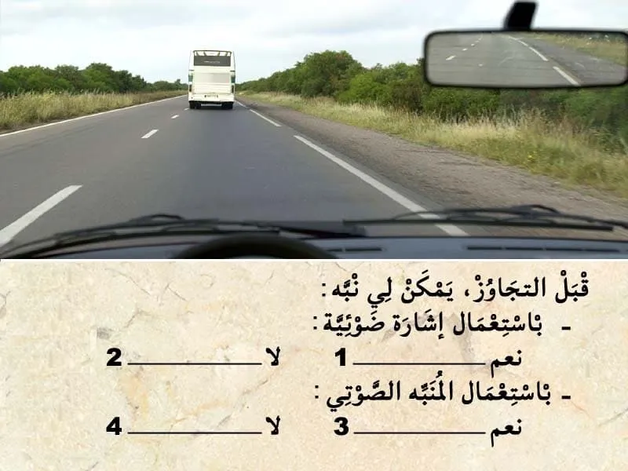
بيّن الجواب
الجواب الصحيح: 1 و 3
باش نتجاوز يمكن لي نستعمل اضافة لمؤشر تغير الإتجاه.
نستعمل إشارة ضوئية باضواء الطريق. و حتى المنبه الصوتي في حالة العربات لي ما عندهاش مرآة داخلية.
السؤال 24
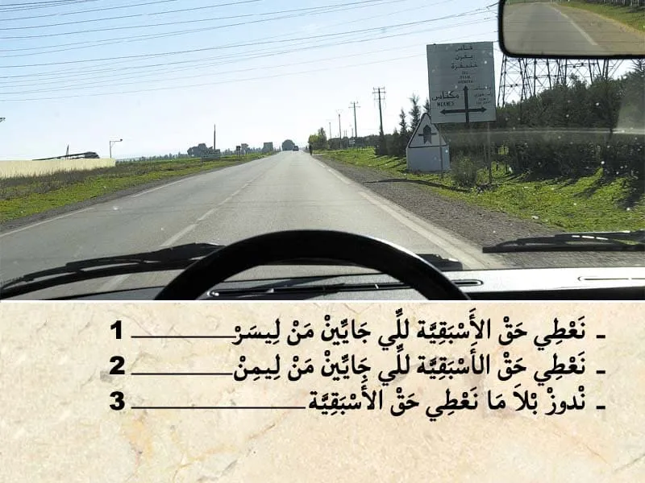
بيّن الجواب
الجواب الصحيح: 3
هذا العلامة ديال خطركتعلم على :
- خطر ملتقى طرق على بعد 150 متر.(خارج التجمع السكني)
- طريق كبيرة في صغيرة .يعني انا لي عندي حق الأسبقية في هذا ملتقى الطرق.
- حيت كاين خطر ،واجب عليا ننقص من السرعة.
السؤال 25
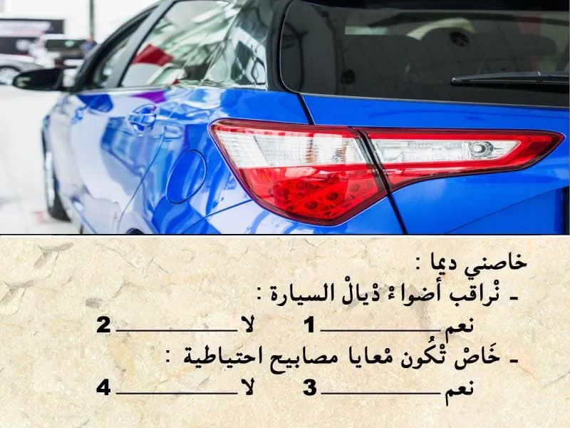
بيّن الجواب
الجواب الصحيح: 1 و 3
من الواجب مراقبة أضواء السيارة. و نضافتها.
و من الواجب تكون معيا مصابيح إحتياطية.